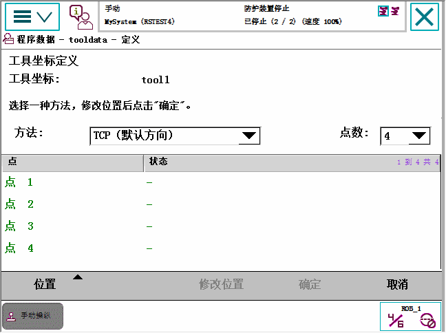
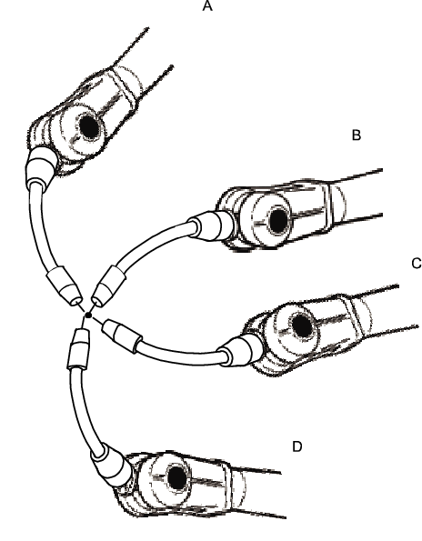

要定义工具框，首先需要在大地坐标系中建立一个参照点。如果要建立工具中心点定向，还需要在工具上附加延伸器。
您还需要决定用于工具框定义的方法。
定义工具框时可使用三种不同的方法。 所有这三种方法都需要您定义工具中心点的笛卡尔坐标。 不同的方法对应不同的方向定义方式。
如果您要... | ...则选择 |
将方向设置为与 机器人安装平台相同的方向 | TCP（默认方向） |
设立Z 轴方向 | TCP&Z |
设立X 轴和Z 轴方向 | TCP&Z,X |
本步骤介绍了如何选择用于定义工具框的方法。
操作 | |
1 | 在 ABB 菜单中，点击 Jogging（微动控制）。 |
2 | 点击 Tool（工具），显示可用工具列表。 |
3 | 选择想要定义的工具。 |
4 | 在 Edit（编辑）菜单中，点击 Define（定义） |
5 | 在出现的对话框中，选择要使用的方法。  |
6 | 选择要使用的接近点的点数。 通常 4 点就足够了。 如果您为了获得更精确的结果而选取了更多的点数，则应在定义每个接近点时均同样小心。 |
7 | 有关如何收集位置和执行工具框定义的详情，请参阅如何执行工具框定义。 |
本步骤介绍如何在笛卡尔坐标系中定义工具中心点。

操作 | Information | |
1 | 将机器人移至合适的位置 A，取得第一个接近点。 | 使用小幅增量，尽量将工具顶点的位置接近参照点。 |
2 | 点击 Modify Position（修改位置），定义该点。 | |
3 | 重复步骤 1 和 2，定义其它的接近点，得到位置 B、C、D。 | 移动机器人，使其远离固定大地坐标点，以便获得最佳效果。 仅修改工具方向不会获得良好的效果。 |
4 | 如果您使用的方法是 TCP & Z 或 TCP & Z, X，则还必须对方向进行定义。 | 遵循如何定义延伸器点中的说明进行操作。 |
5 | 如果您出于某种原因希望恢复步骤 1-4 中所描述的校准步骤，请点击 Positions（位置），然后点击 Reset All（全部重置）。 | |
6 | 将所有点都定义好后，您可将它们保存到文件，以便以后重新使用。在 Positions（位置）菜单中，点击 Save（保存）。 | |
7 | 点击 OK（确定）。系统将立即显示 Calculation Result（计算结果）对话框，要求您在将结果写入到控制器之前对结果进行取消或确定。 | 详情请参阅计算结果是否足够准确？ |
本步骤介绍如何通过指定 z 和／或 x 轴的方向来定义工具框的方向。 只有在工具方向应不同与机器人基座方向时，才需执行此操作。 默认情况下，工具坐标系与 tool0 的坐标系类似，如测量工具中心点 图示所示。
操作 | |
1 | 在不改变工具方向的情况下，移动机器人，使参考大地坐标点成为所需旋转工具坐标系正轴上的某个点。 |
2 | 点击 Modify Position（修改位置），定义该点。 |
3 | 如果需要定义第二根轴，重复步骤 1 和 2。 |
Calculation Result（计算结果）对话框显示了工具框定义的计算结果。计算结果必须在您确认接受后才能在控制器中生效。为了得到更好的结果，您也可以选择恢复框架定义。Mean Error（平均误差）结果指的是根据计算的 TCP（工具中心点）所得到的接近点的平均距离。Max Error（最大误差）是所有接近点中的最大误差。
结果是否可以接受很难作出确切判断。 这取决于您使用的工具、机器人类型等。 一般来说，平均误差达到十分之几毫米时，则计算准确。 如果定位合理精确，计算结果也会准确。
由于机器人被用作为测量机器，因此结果还取决于机器人工作区域内的定位位置。 工作区域不同部件中的定义之间，实际 TCP 的差异可达到几毫米（对于大型机器人）。如果以后的 TCP 校准接近于之前的校准，则可重复性将提高。 注意，所得结果是机器人在该工作区域的最佳 TCP，并考虑了机器人在当前配置中的任何差异。
 | 提示 检查工具框是否正确定义的常用方法是定义就绪后执行重新定向测试。 选择重新定向动作模式和工具坐标系，然后移动机器人。 验证机器人移动时工具顶点是否非常接近所选参照点。 |